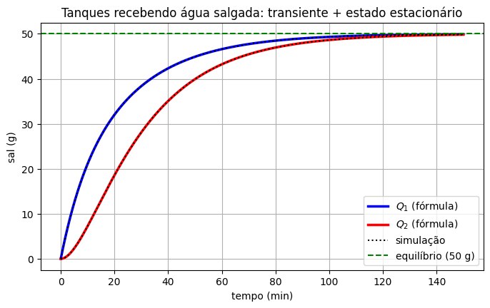

Sistemas Lineares Não Homogêneos#
Vamos agora acrescentar um termo forçante ao sistema:
O vetor \(\mathbf{g}(t)\) representa uma influência externa: sal entrando num tanque, uma infusão contínua de remédio, uma fonte num circuito, uma força agindo sobre uma massa. Assim como para as equações de segunda ordem, vamos usar o método dos coeficientes a determinar, que funciona quando \(A\) é constante e \(\mathbf{g}(t)\) é formado por polinômios, exponenciais, senos e cossenos.
A estrutura da solução: \(\mathbf{x}=\mathbf{x}_h+\mathbf{x}_p\)#
Resultado. A solução geral de \(\mathbf{x}'=A\mathbf{x}+\mathbf{g}(t)\) é
em que \(\mathbf{x}_h\) é a solução geral do sistema homogêneo associado \(\mathbf{x}'=A\mathbf{x}\) (que já sabemos encontrar) e \(\mathbf{x}_p\) é uma solução particular qualquer do sistema não homogêneo.
A justificativa é a mesma de sempre: se \(\mathbf{x}\) e \(\mathbf{x}_p\) são duas soluções do sistema não homogêneo, a diferença \(\mathbf{w}=\mathbf{x}-\mathbf{x}_p\) satisfaz \(\mathbf{w}'=A\mathbf{x}+\mathbf{g}-(A\mathbf{x}_p+\mathbf{g})=A\mathbf{w}\), ou seja, resolve o homogêneo.
O método dos coeficientes a determinar#
A ideia é a mesma da segunda ordem: tentar uma solução particular com a mesma «cara» de \(\mathbf{g}(t)\), só que agora com vetores como coeficientes a determinar.
\(\mathbf{g}(t)\) |
Tentativa para \(\mathbf{x}_p(t)\) |
|---|---|
vetor constante \(\mathbf{b}\) |
vetor constante \(\mathbf{a}\) |
polinômio de grau \(m\) (com coeficientes vetoriais) |
\(\mathbf{a}_mt^m+\cdots+\mathbf{a}_1t+\mathbf{a}_0\) |
\(\mathbf{u}\,e^{\alpha t}\), com \(\alpha\) não autovalor de \(A\) |
\(\mathbf{a}\,e^{\alpha t}\) |
\(\mathbf{u}\,e^{\alpha t}\), com \(\alpha\) autovalor (simples) de \(A\) |
\(\mathbf{a}\,te^{\alpha t}+\mathbf{b}\,e^{\alpha t}\) |
\(\mathbf{u}\cos\beta t+\mathbf{w}\,\text{sen}\,\beta t\), com \(i\beta\) não autovalor |
\(\mathbf{a}\cos\beta t+\mathbf{b}\,\text{sen}\,\beta t\) |
Se \(\mathbf{g}\) for uma soma de termos desses tipos, somamos as tentativas. Os vetores \(\mathbf{a},\mathbf{b},\dots\) são encontrados substituindo a tentativa no sistema e igualando os coeficientes, o que leva a sistemas lineares algébricos — as ferramentas da aula de sistemas lineares.
Repare numa diferença em relação à segunda ordem: na ressonância (quando \(\alpha\) é autovalor), não basta multiplicar por \(t\); é preciso usar \(\mathbf{a}\,te^{\alpha t}+\mathbf{b}\,e^{\alpha t}\), com os dois termos. Veremos por quê no Exemplo 3.
Exemplo 1: uma exponencial#
Encontre a solução geral de
Homogêneo: já conhecemos essa matriz — autovalores \(2\) e \(-1\), autovetores \((1,1)\) e \((1,4)\):
Particular: como \(1\) não é autovalor, tentamos \(\mathbf{x}_p=\mathbf{a}\,e^{t}\). Então \(\mathbf{x}_p'=\mathbf{a}\,e^{t}\), e substituindo:
Da primeira equação, \(a_2=2a_1\); na segunda, \(-4a_1+6a_1=6\), então \(a_1=3\) e \(a_2=6\). Logo \(\mathbf{x}_p=\begin{pmatrix} 3\\ 6\end{pmatrix}e^{t}\), e a solução geral é
Repare que o sistema para \(\mathbf{a}\) tem solução única justamente porque \(\det(I-A)\neq0\), ou seja, porque \(1\) não é autovalor de \(A\). Se fosse, a matriz seria singular e a tentativa falharia — é a ressonância.
import numpy as np
import sympy as sp
import matplotlib.pyplot as plt
from scipy.integrate import solve_ivp
t = sp.symbols('t')
A = sp.Matrix([[3, -1], [4, -2]])
g = sp.Matrix([0, 6])*sp.exp(t)
xp = sp.Matrix([3, 6])*sp.exp(t)
print("x_p' - A x_p - g =", sp.simplify(xp.diff(t) - A*xp - g).T)
x_p' - A x_p - g = Matrix([[0, 0]])
Exemplo 2: dois tanques recebendo água salgada#
Voltemos aos dois tanques da aula de modelagem (cada um com \(100\) L; \(8\) L/min passam do Tanque 1 para o 2, \(2\) L/min voltam e \(6\) L/min saem do Tanque 2). Agora, em vez de água pura, entra no Tanque 1 água salgada com \(0{,}5\) g/L, a \(6\) L/min — ou seja, \(3\) g de sal por minuto. Os tanques começam com água pura. O sistema fica
Particular: \(\mathbf{g}\) é constante, então tentamos \(\mathbf{x}_p=\mathbf{a}\) constante. Como \(\mathbf{x}_p'=\mathbf{0}\):
Uma solução constante é um equilíbrio: com \(50\) g em cada tanque (ou seja, \(0{,}5\) g/L, a mesma concentração da água que entra), nada muda. Faz todo o sentido físico.
Homogêneo: \(\operatorname{tr}M=-0{,}16\) e \(\det M=0{,}0064-0{,}0016=0{,}0048\), então
com autovetores \(\mathbf{v}^{(1)}=(1,2)\) e \(\mathbf{v}^{(2)}=(1,-2)\) (confira!).
Solução geral e PVI:
Com \(\mathbf{x}(0)=\mathbf{0}\): \(c_1+c_2=-50\) e \(2c_1-2c_2=-50\), então \(c_1=-37{,}5\) e \(c_2=-12{,}5\).
Interpretação. Como os dois autovalores são negativos, a parte homogênea some com o tempo, e as quantidades de sal tendem ao equilíbrio \((50,50)\). É a mesma divisão que vimos nas vibrações forçadas: a parte homogênea é o transiente (depende da condição inicial e morre) e a parte particular é o estado estacionário (determinado pela entrada de sal). A escala de tempo da aproximação é ditada pelo autovalor mais lento, \(-0{,}04\)/min: em cerca de \(1/0{,}04=25\) minutos o desvio do equilíbrio cai por um fator \(e\).
M = np.array([[-0.08, 0.02], [0.08, -0.08]])
b = np.array([3, 0])
print("equilíbrio (x_p):", np.linalg.solve(M, -b))
tt = np.linspace(0, 150, 500)
Q1 = -37.5*np.exp(-0.04*tt) - 12.5*np.exp(-0.12*tt) + 50
Q2 = -75*np.exp(-0.04*tt) + 25*np.exp(-0.12*tt) + 50
sol = solve_ivp(lambda t, x: M @ x + b, (0, 150), [0, 0], t_eval=tt)
plt.figure(figsize=(8, 4.5))
plt.plot(tt, Q1, 'b', linewidth=2.5, label='$Q_1$ (fórmula)')
plt.plot(tt, Q2, 'r', linewidth=2.5, label='$Q_2$ (fórmula)')
plt.plot(tt, sol.y[0], 'k:', label='simulação')
plt.plot(tt, sol.y[1], 'k:')
plt.axhline(50, color='g', linestyle='--', label='equilíbrio (50 g)')
plt.xlabel("tempo (min)"); plt.ylabel("sal (g)")
plt.title("Tanques recebendo água salgada: transiente + estado estacionário")
plt.legend(); plt.grid(True)
plt.show()
equilíbrio (x_p): [50. 50.]

Exemplo 3: ressonância (o exemplo do Boyce)#
Encontre uma solução particular de
A matriz tem autovalores \(-1\) e \(-3\), com autovetores \((1,1)\) e \((1,-1)\). Separamos o forçamento em duas partes:
O termo polinomial pede \(\mathbf{c}\,t+\mathbf{d}\). O termo exponencial tem \(\alpha=-1\), que é autovalor: ressonância. Pela tabela, tentamos
Substituindo e igualando os coeficientes de \(te^{-t}\), \(e^{-t}\), \(t\) e da constante, obtemos quatro equações vetoriais:
A primeira diz que \(\mathbf{a}\) é um autovetor de \(-1\): \(\mathbf{a}=k(1,1)\).
A segunda, reescrita como \((A+I)\mathbf{b}=\mathbf{a}-(2,0)\), é um sistema com matriz singular (\(-1\) é autovalor), que só tem solução para uma escolha específica de \(k\). Fazendo as contas, isso força \(k=1\), ou seja, \(\mathbf{a}=(1,1)\), e então \(\mathbf{b}=(0,-1)\) serve.
A terceira e a quarta são sistemas comuns: \(\mathbf{c}=(1,2)\) e \(\mathbf{d}=-\tfrac13(4,5)\).
Logo,
Agora fica claro por que a tentativa \(\mathbf{a}\,te^{-t}\) sozinha não bastaria: a equação para \(\mathbf{a}\) obriga \(\mathbf{a}\) a ser autovetor, e o forçamento \((2,0)\) não está na direção do autovetor \((1,1)\). O termo extra \(\mathbf{b}\,e^{-t}\) «absorve» a parte do forçamento que não está nessa direção.
A = sp.Matrix([[-2, 1], [1, -2]])
g = sp.Matrix([2*sp.exp(-t), 3*t])
xp = (sp.Matrix([1, 1])*t*sp.exp(-t) - sp.Matrix([0, 1])*sp.exp(-t)
+ sp.Matrix([1, 2])*t - sp.Rational(1, 3)*sp.Matrix([4, 5]))
print("x_p' - A x_p - g =", sp.simplify(xp.diff(t) - A*xp - g).T)
x_p' - A x_p - g = Matrix([[0, 0]])
Resumo#
Para resolver \(\mathbf{x}'=A\mathbf{x}+\mathbf{g}(t)\):
Resolva o homogêneo \(\mathbf{x}'=A\mathbf{x}\) com autovalores e autovetores, obtendo \(\mathbf{x}_h\).
Monte a tentativa de \(\mathbf{x}_p\) pela tabela (atenção à ressonância, quando o expoente de \(\mathbf{g}\) é autovalor de \(A\)).
Substitua, iguale coeficientes e resolva os sistemas lineares para os vetores desconhecidos.
A solução geral é \(\mathbf{x}=\mathbf{x}_h+\mathbf{x}_p\); se houver condição inicial, ajuste as constantes de \(\mathbf{x}_h\) resolvendo mais um sistema linear.
Quando todos os autovalores de \(A\) têm parte real negativa, \(\mathbf{x}_h\to\mathbf{0}\) e, a longo prazo, a solução segue \(\mathbf{x}_p\): o sistema «esquece» a condição inicial e responde só à entrada externa.
Quando \(\mathbf{g}(t)\) não tem uma das formas da tabela (por exemplo, \(t^{-1}\) ou \(\tan t\)), existe o método de variação dos parâmetros, que não vamos abordar neste curso.